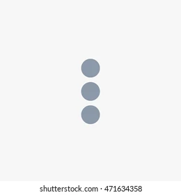

To use whatsapp on your computer:
1. Open whatsapp on your phone
2. Tap on
Menu
 or
Settings
and select
Linked Device
3. Take on
Linked a Device
4. Position your phone to this screen to capture the QR code
Link with your phone number